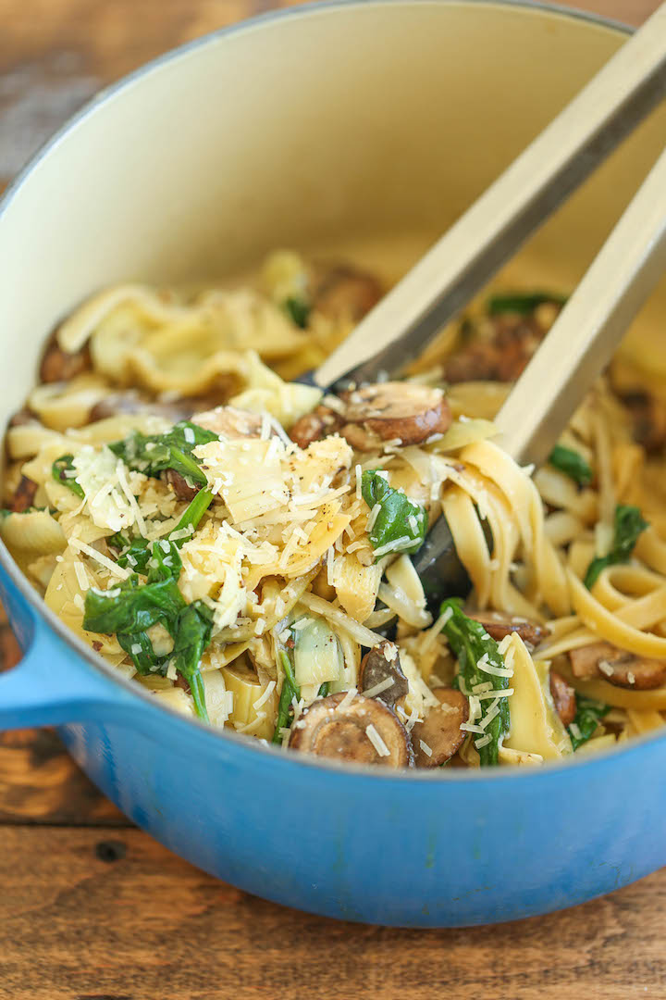

One Pot Spinach Mushroom Pasta
Home

Description
This one pot recipes comes together very fast.
It pairs well with a lot of meat options and fish, too.
The best is you will only need one pan!
Ingredients
- One tablespoon of olive oil
- One onion, sliced
- White mushrooms, sliced
- Two gloves of garlic, minced
- 1/4 teaspoon chili flakes
- One teaspoon salt
- Four cups chicken broth
- Pasta
- One bag baby spinach
- 1/2 cup grated Parmesan cheese
- One teaspoon lemon juice
Steps
- Heat oil in a large skillet over medium-high heat.
Add onion and mushrooms.
Cook for 7 minutes. Add garlic and chili flakes. Cook for 1 minute.
-
Stir in salt, broth and pasta. Bring to a boil.
Reduce heat, cover and cook at a simmer for 10 minutes, stirring halfway through.
-
Turn off heat. Add spinach, cover and let sit for 2 minutes.
Stir in Parmesan and lemon juice. Serve immediatly.